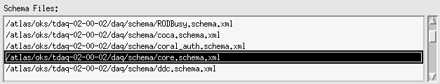
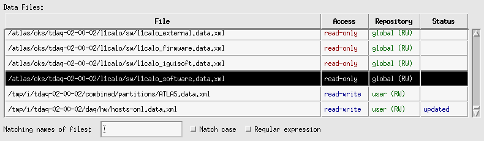
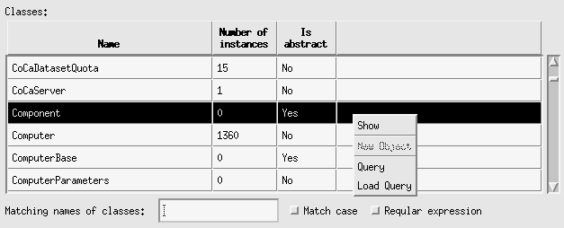

OKS Data Editor
Main Window
The Main Window contains the following items:
Menu Bar
The Menu Bar allows to perform actions listed below. In some cases the
actions are available via combination of key accelerators, e.g. to exit
editor press simultaneously <Ctrl> and Q keys.
- File
- Save All Updated <Ctrl+S> - Save all updated
files. The comments dialog will appear. If non-empty comment will be
provided, it will be added to all saving files.
- Create User Repository - Create [temporal] user
repository to work with OKS server (only available, if
TDAQ_DB_REPOSITORY process environment is defined).
- Release User Repository <Ctrl+D> - When OKS
server is used, remove all files from user repository area (uncommitted
changes can be lost!).
- Update User Repository <Ctrl+U> - When OKS
server is used, update from server all files in user repository area
(uncommitted changes can be lost!).
- Commit User Repository <Ctrl+C> - When OKS
server is used, commit all modified files in user repository area.
- Check consistency <Ctrl+Y> - Apply consistency
checks to loaded data files; in case of any reported problem it has to
be
fixed, if problematic file is going to be saved.
- Exit <Ctrl+Q> - Exit the OKS Data Editor.
The 'Exit Confirmation Dialog' will appear. Choose [Exit] to exit or
[Cancel] to continue work with Data Editor. You will be asked on
unsaved and uncommitted files.
- Edit
- Find <Ctrl+F> -
bring up Find dialog allowing to find
objects by value of an attribute or a relationship.
- Replace <Ctrl+R>
- bring up Replace dialog allowing to
find and replace values of an attributes or a relationships.
various graphical
windows customized by users, e.g.:
- Software Repository
- Data Quolity Tree
- Tests Repository
- Control Tree
- Partition
- Data Quality Algorithms
- Hardware
- Options
- Silence Mode - Select toggle button to switch OKS
kernel in silence mode.
- Verbose Mode - Select toggle button to switch OKS
kernel in verbose mode.
- Profiling Mode - Select toggle button to switch OKS
kernel in profiling mode.
- Check externally modified
files - Select toggle button to periodically check if loaded
file was modified by an external process. In such case ask user, if the
file has to be saved or reloaded.
- Set period of check - Set period of check for above
option.
- Recovery mode for modified files - Select toggle
button to periodically save modified
files. In case of a problem the recovery file with latest update can be
used found.
- Set backup period -
Set period of save for above option.
- Ask comment on file save
- Select toggle button to enable / disable dialog box asking for
comments of file saving.
- Restore position on restart
- Save positions of the main and message windows, when exit application
and restore them, when the editor is restarted. The options are saved
on exit, if this toggle is on.
- Save Options - Save given options on ~/.oks-data-editor-rc.xml
file and use them, when the editor will be used next time.
- Windows
- Help <Ctrl+H> - select to popup Help Window
- Message Log <Ctrl+M> - select to popup Message Log Window
- Window 1 - Select to popup first child window (if it
is opened)
- Window 2 - Select to popup second child window (if it
is opened)
...
- Window N - Select to popup n-th child window (if it is
opened)
- Help
- General
- Index
- Main Window
- Message Log
- Data File Window
- Class Window
- Object Window
- Query Window
- Graphical Window
- Find/replace Window
- About... - Select to popup About OKS Data Editor
Dialog Box. It contains copyrights info and OKS version.
OKS Schema Files List
The OKS Schema Files List shows loaded schema files and allows several
operations
with them. It is possible to load schema file, to close selected or all
schema files. To display a list of the available actions with
OKS schema files, it is necessary press right mouse button, when mouse
pointer will be over the scheme list, as it shown on the figure below:

The popup menu allows the following actions:
- item [Open...] allows open already existing OKS schema
file
- item [Close filename] closes selected OKS schema
file (if there is no selected schema file, it will be disabled)
- item [Close All] closes all loaded schema files (if there
are no loaded schema files, it will be disabled)
Note, that the close operation results close of data files using
classes from closing schema file.
OKS Data Files Table
The OKS Data Files Table selectively shows loaded data files and allows
several operations with them:

Popup Menu
To display a list of the available
actions with OKS data files, it is necessary to press right mouse
button,
when mouse pointer will be over the data files table. The popup menu
allows the following actions (some of them can be disabled, if the file
is not selected or the OKS server is not used):
- [New...] - Create new OKS data file
- [Open...] - Open already existing OKS data file
- [Close filename] - Close selected OKS data file
- [Close All] - Closes all loaded data files
- [Save filename] - Save selected OKS data file in
extended format
- [Force Save filename] - Save selected OKS data
file in extended format ignoring consistency rules (non-recommended!)
- [Save As... filename] - Save selected OKS data
file with other name. It is also possible to choose between extended
(default) and normal (compact) data file formats.
- [Checkout filename] - Checkout file from OKS
server for local modifications in user repository area.
- [Update filename] - Update file located in user
repository area from OKS server (uncommitted changes can be lost!) and
reload it.
- [Commit filename] - Commit modifications made in
user repository area on the OKS server.
- [Release filename] - Remove file located in user
repository area (uncommitted changes can be lost!) and reload it from
OKS server repository.
- [Save All] - Save all loaded data files, for which teher
are write permissions.
- [Set Active filename] or [Unset Active filename]
- Set or unset selected data file. The active file means: any created
object will be placed in this data file; it is possible move an
existing object to this data file.
- [Details filename] - Display the Data File Window that will show the
table of objects, loaded from selected data file.
The double-click on data files table brings Data
File Window.
The table shows the following information about data file:
- File - Fully qualified filename.
- Access - Direct filesystem access rights (read-write,
read-only, no access).
- Repository - Display which OKS repository the file is
located on or none, if the file is not stored on
OKS server. For a repository file the access permissions are shown: RW - read-write access, R
- read-only access (i.e. commit on
OKS server is not allowed).
- Status - Updated, active, locked or none
The press of table's column header button sorts contents of table
by
this column. For example, sort by "Status" column to get list of all
modified files.
Search Panel
The bottom panel of Data Files table allows to display a sub-set of
loaded data files. If there are no any symbols in the "Matching
names of files:" text
filed, then all files are shown. Otherwise only those files, which
match the search mask are shown.
If the "Reqular expression"
toggle button is selected, to apply the mask press appeared  button. Otherwise the
modified selection is applied automatically, when the mask is modified.
button. Otherwise the
modified selection is applied automatically, when the mask is modified.
OKS Classes Table
The OKS Classes Table shows loaded OKS classes and allows some
operations
with them. The user is able to browse instances of a class, create new
instance of a class, create or load a query for a class. To display a
list
of the available actions with OKS data files, it is necessary press
right
mouse button, when mouse pointer will be over the classes' table, as it
shown on the figure below:

The popup menu allows the following actions:
- [Show] - Display the Class
Window that will show the table of instances, created for selected
class (if the class is abstract, the item will be disabled).
- [New Object] - Create new instance of selected class. The
item is disabled if the class is abstract, or when there is no
active data file.
- [Query] - Create Query Window
for selected class.
- [Load Query] - Create Query
Window
for selected class and loads already existing query.
The double-click on data files table will bring Class
Window.
The table shows the following information about class:
- Name
- Number of instances
- Is abstract (yes, no)
The press of table's column header button will sort contents of table
by
this column.
Search Panel
The bottom panel of Classes table allows to display a sub-set of
classes. If there are no any symbols in the "Matching names of
classes:" text
filed, then all classes are shown. Otherwise only those classes, which
match the search mask are shown.
If the "Reqular expression"
toggle button is selected, to apply the mask press appeared
button. Otherwise the
modified selection is applied automatically, when the mask is modified.
Home - Next
- Index
Modified 09-JUN-2009
Author Igor Soloviev